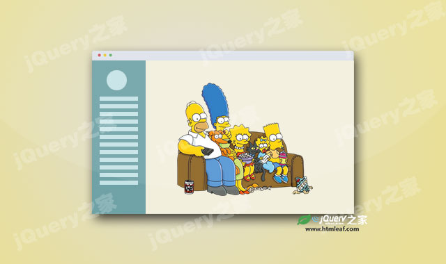
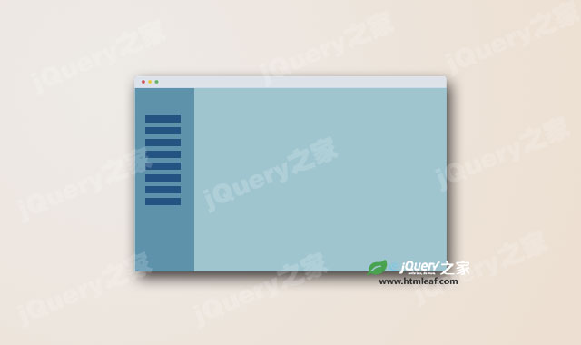

唇形目
唇形科
木樨科
脂麻科
豆科
禾本目
凤梨科
禾本科
竹亚科
葫芦科
姜目
芭蕉科
竹芋科
姜科
菊科
壳斗目
胡桃科
壳斗科
蔷薇目
蔷薇科
鼠李科
茄目
茄科
旋花科
伞形科
十字花科
松柏目
桃金娘科
石蒜科
无患子目
漆树科
无患子科
芸香科
樟科
棕榈科
其它植物
雉科
鸭科
猪科
其它动物
菌类与味精
jquery固定折叠侧边栏菜单插件
jQuery之家
返回下载页
如果你喜欢这个插件，那么你可能也喜欢:

js侧边栏菜单插件canvi

jquery侧边栏插件sideToggle